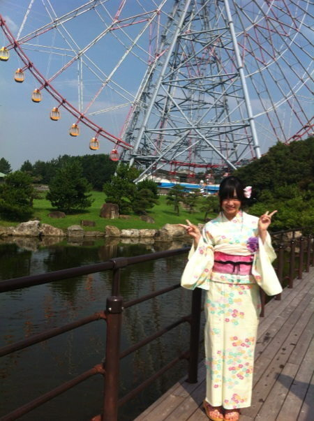
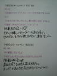
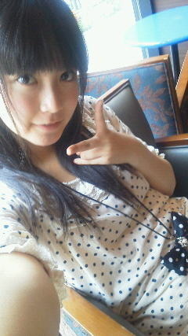
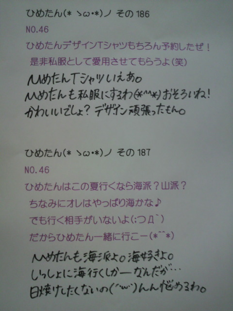
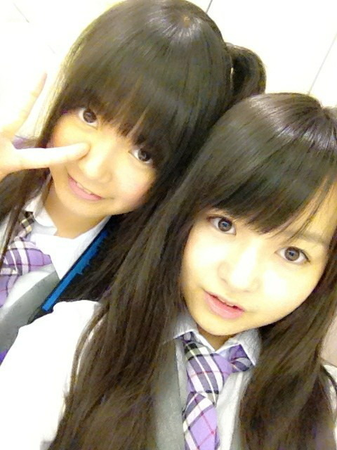
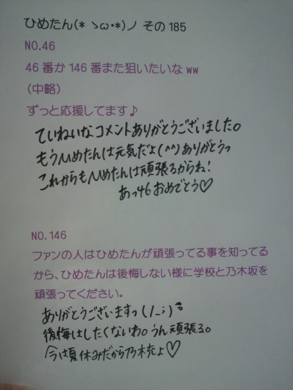

昨日の乃木坂浪漫、見てくださったかな(^^)？
浴衣・観覧車・水族館なんて素敵すぎるしょー
撮影中はテンション上がってばっかでした！
エピソードを挙げるなら...
・浴衣はピンクと黄色でめちゃ悩んだ結果
普段は着ないような黄色をあえてチョイスしてみたのですが、
オンエア見てみたら黄色の浴衣が映えててよかったなって思った
・まぶしかった(>_<)
とにかくまぶしくて、顔が強ばってるんじゃないか不安だった
そして暑かったー
・観覧車の中は冷房がきいてて快適だった
こんな感じかな(*^^*)
昨日今日はろってぃー(川村真洋chan)と２人で
大阪・奈良・和歌山を巡ってＰＲしてますよー
＊大阪＊
都会ね！
街中いろんなとこから聞こえる関西弁に
いちいちきゅんきゅんしてました(//ω//)
ネギ焼き美味しかったのよ。
生地薄くてネギたっぷりだからヘルシーな味だった！
大阪人は「お好み焼き定食」ゆーて
お好み焼きと白いごはん食べたりするんですってねーあめいじんぐ。
＊奈良＊
奈良駅にせんとくんおった(*^^*)
収録する所の周りにはとっても静かで落ち着いた雰囲気のおうちが並んでた。
おうちの前に「身代わり申」ってお人形さんがぶらさがってるんだけど
本当にかわいいのね＊
本気で買って帰ろうと思った。忘れてたけど...
＊和歌山＊
自然のきれいさにとりあえず驚きましたーね
川はきらきらしてて、緑も鮮やかだったのよ
広島とどこか似てるような気がして懐かしくなりましたね＊
ひめたん人生初☆和歌山上陸いえあ＼(^O^)／
ぶどう美味しかったよ！
各ラジオ局さんテレビ局さん、めちゃ歓迎して下さって嬉しかったです
ありがとうございましたっ
明日は島根にいきますよー∩^ω^∩＊
短いけど近況報告でした☆
(*´・ω・*)ひめたん

ブログ楽しみに待っててくださった方、本当にごめんなさい。
最近ブログと向き合う時間ができなかったこと、反省(´；ω；｀)
ひめたんは元気ですよー
名古屋liveきて下さった方ありがとうございました
ひめたんはやっぱり歌が好きで、ダンスが好きで、このliveのために今まで
精一杯頑張ってきてよかったなって思いました(^^)
昨日の私たちの「初」の本格的な単独liveにみんなで出れなかったこと、
アンダー全員で「涙がまだ悲しみだった頃」が披露できなかったこと、
それでもやっぱり大好きなみんなとliveできてよかったなってこと。
悔しい半分、嬉しい半分てとこかな。
パレオはエメラルド、会いたかった、Beginner。
48グループさんの曲に挑戦(`・ω・')
自分らまだまだだなーってのと、ライバルの存在の大きさを痛感しました。
個人的には、パレオのような元気なダンス好きすきよ＊
雛壇にあがると、会場全体が見渡せて気持ち良かった。
サイリウムきらきらだったーよ！
そして、今回のliveを通して思ったこと。
中身は違えど、みんなそれぞれ抱えてる
今までにないようなプレッシャーを感じてみたり
気持ちはあっても体がついていかなかったり
ひめたんみたいに、改めて悔しい思いをしたりした子もいるかもしれない。
取り組めば取り組むほど、悩みや不安もおっきくなる。
でも、それだけ今回のliveに真剣に向き合ってる証拠だってことなんだって。
30分のミニliveでくたくたになってた私たちが、Zeppで２時間踊り切れた。
体力と精神力はこのliveでちょっと成長できたかな。
東京公演も頑張ります。
セトリ＊長いよーっ
走れ！Bicycle
ハウス！
涙がまだ悲しみだった頃
狼に口笛を
左胸の勇気
せっかちなかたつむり
人はなぜ走るのか
音が出ないギター
パレオはエメラルド
会いたかった
Beginner
ぐるぐるカーテン
おいでシャンプー
失いたくないから
会いたかったかもしれない
走れ！Bicycle
乃木坂の詩
そして昨日は
広島のVibe On Music生放送出演！
ゆーわけで1日まあや(和田まあやchan)と２人で岡山広島巡りました＊
もちろんお仕事よ。


(*´・ω・*)ひめたん
なかいさん。
中元さんと伊藤さんね。

つーん
つーんつーんつーん
あしゅ(齋藤飛鳥chan)に言われて気付いた。最近のひめたんのくせです。
つーんって言いながらみんなの腕とか背中とかつつくの。
ちなみに鼻をつつくときは「ぴんぽーん」ね＊
あしゅしゅに「ぴんぽーん」したら、「何でしょう」って答えてくれるから、
「飛鳥ちゃんいますかー？」て聞いてみましょう＼(^O^)／
あっしゅっしゅ
かーわいーいねー
今日はunder stationでした！
来てくださった方ありがとう(´；ω；｀)
あしゅ(齋藤飛鳥chan)せいたん(畠中清羅chan)あみ(能條愛未chan)ひめたん
あら素敵なめんつね。
ひめたんわーるど
せいたんわーるど
あみあみわーるど
ちろちろぽん。
楽しかった＼(^O^)／
みんなで最後におうたも歌えたしね＊
詳しくはオンエアをちぇーっくしてみてね！
ブログごめんね(´；ω；｀)
ひめたんは元気よ。レッスン頑張ってるよ！
素敵なliveになりますように。ちろちろぽん。
(*´・ω・*)ひめたん
生還＼(^O^)／
携帯かむばっく。
長いことブログおやすみしてごめんなさい←
ひめたんは元気よ＊
あんねー、運営さんブログにも書いてあったけどね
28日に長崎のバスの中に携帯置いてきちゃって、今日やっと再会。
無事だったのねよかったね。うん！
携帯って便利ね。
改めて思った(`・ω・')きら
携帯ない生活。想像できますかしら？
アラームないから目覚まし時計で起きて、
みんなのブログをパソコンでチェックして、
スケジュールは紙に書いて帰らなきゃだし
友達に連絡とりたい時は固定電話...。
今日は書くこといぱーいありますよ(^O^)
いっこめ:長崎
＊セトリ＊
おいでシャンプー
ぐるぐるカーテン
涙がまだ悲しみだった頃
走れ！bicycle
まずホテル。
らりん(永島聖羅chan)あみあみ(能條愛未chan)と同じお部屋にお泊まり！
YouTubeでホラーの動画を見たのね丑三つ時に。
舞台が学校のトイレだったんだけど、やーがちで本気で素で
しばらくはひとりでトイレ行けそうにない(´・_・`)
がたがたがたがた。きゃ
あのね。
その前に名古屋からの新幹線で爆睡だったのよ。
だからかえって寝れなくなっちゃったのね←
それにホラーなんて見るからもう目がさえちゃったてことです(´；ω；｀)
で朝、バスで長崎入り。
この車内でめちゃ寝たから、イベントは元気だったのよ(*^^*)
やー暑かったですねー
目の前には緑の原っぱみたいなのが広がり、後ろを振り返ると海ってゆ
最高のロケーションで踊りました(^O^)
祝☆ひめたん人生初長崎とゆーことで拍手っ
故に乃木坂でも長崎は初めてってことなので、
ライブどんな感じかしらっておもてたのだが、やー楽しかったす(ω)
地元の方も遠征して下さった方も、みなさんありがとうです。
にこめ:under station
＠東京タワー！
7月31日。
ねねころ(伊藤寧々chan)かわごさん(川後陽菜chan)ひめたん。初ねーこのペア。
来てくださった方ありがとうございました！
２人ともありがとうお！
公式ホームページでオンエアされてるみたいなけ、よかったら聴いてみてぬ。
みっつめ:３rd個人ＰＶ
ダンカンさんに監督をやっていただきました(^^)
今回の舞台は四谷。かの有名な四谷怪談のあの四谷ねー
ゆーてひめたんは四谷怪談知らんかったけれども。
もう知った。もう知ったよー怖いんでしょー(´・ω・`)
裏話をひとつ挙げるとすると、最初にお手紙を読むシーンがあるんだけれども
風がつおいのね。髪ーかみかみかみーみたいなね。
あの場面はもう１テイクでいけるでしょって...
や確かにそんな難しいシーンじゃないけど...髪...。
Type-Ｃに入ってます＊お楽しみに！
よっつめ:るんるん
るんるん(斎藤ちはるchan)のブログみたー？
ひめたんのこと紹介してくれてたの∩^ω^∩
だから今日はひめたんがるんるんのこと紹介するね！
るんるんはね、
まー同い年なのに大人っぽい子だなー
ひめたんのこと相手にしてくれるかしらー
なんて思ってたのね最初。そしたら
怪盗少女ちはるんーとか
今日も一緒にちはーるんるんーとか
中身は幼かったのね(。・ω・。)
がきんちょ。中３組はみーんながきんちょ。
あ、「中３組」って、間違えてるんじゃないよ？実年齢は高１よ？
３人はいつまでもがきんちょですよって意味の中３組。深いねー
乃木坂の中でも精神年齢はいっちゃん幼い学年だと思う(^^)
あーでもるんるんは、やる時はやる子。できるこ！
実際頭いいのよ。テストとか通知書とか見てみー？
ダンスだって、乃木坂入って始めたらしいけど、いま上手やん＊
あと、きれいに可愛くなった！
きっとかげで努力してるのね。やー怖い怖い(*^^*)
そんなるんるんが大好きよ///ちゅ
最後にくいずたーいむ
ひめたんは５日間携帯なかったのですが、
そのあいだに何人の人からmail来てたでしょーうか∩^ω^∩？

(*´・ω・*)ひめたん